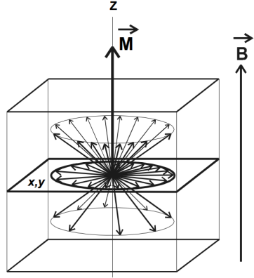
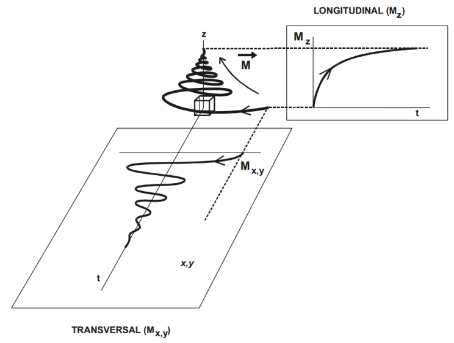

Los sistemas de generación de imágenes utilizados en la actualidad son sofisticados y costosos. Para los estudiantes que no están en una licenciatura en salud es casi imposible que puedan tener lecciones y prácticas con esta clase de equipos. Recientemente la facultad de ciencias de la UNAM, adquirió dos equipos de RM tanto para generar imágenes como espectros con campo magnéticos bajos. Los sistemas de adquisición por resonancia magnética (RM) son equipos muy complejos cuya operación debe ser evaluada sistemáticamente bajo esquemas establecidos. Estos permiten adquirir señales de RM con las cuales se pueden generar imágenes o señales de espectroscopia, que se utilizan en la caracterización de diversos materiales y sustancias. Uno de los sistemas puede emplear el campo magnético de la tierra para generar imágenes (Sistema IRM TERRANOVA) y el otro hace uso de un campo magnético de 1 Tesla para espectroscopia de protones principalmente (Sistema NMR SPINSOLVE). Las imágenes que se generan pueden ser estáticas o funcionales. Las estáticas son imágenes que ofrecen información de la composición interna de un objeto (muy similar a los rayos X) y las funcionales son imágenes que ofrecen información sobre la actividad específica del objeto bajo estudio. La espectroscopia por resonancia magnética se diferencia de la RM convencional en la forma en que presenta la información, en lugar de una imagen se presenta un espectro de componentes bioquímicos del objeto bajo estudio.
La técnica de Resonancia Magnética, es una de las modalidades de adquisición de imagen que ha evolucionado desde el uso de ultra-bajos a ultra-altos campos magnéticos estáticos, así como el proceso de digitalización, por lo que la técnica de generación de imagen se ha vuelto más complejo. Las bases teóricas, sin embargo, son las mismas desde que en los 80, Paul Lauterbur y Peter Mansfield, galardonados en el 2003 con el Premio Nobel de Medicina, permitieron el uso del fenómeno de la Resonancia Magnética para producir imágenes [1,2]. En la actualidad los campos magnéticos empleados son del orden de 0.02 Tesla (ultra-bajos campos magnéticos) a los 9.4 Tesla (ultra-altos campos magnéticos) [3]. Los sistemas de IRM cuentan con antenas de radiofrecuencia, las cuales son usadas para emitir y recibir energía y señales de resonancia magnética. Otro elemento importante son las variaciones locales en el campo magnético estático producidas por los gradientes. La imagen generada por estos sistemas está directamente relacionada con la señal de RM. En general, es dependiente de parámetros intrínsecos como la densidad de espines, tiempos de relajación y efectos de susceptibilidad magnética. Así, la imagen de una misma sección de una muestra puede ser tan nítida o a la vez no, debido a la combinación de los parámetros mencionados anteriormente.
Para entender el fenómeno de la señal de RM y la generación de imágenes por RM (IRM) es necesario estudiar el comportamiento de los núcleos, y algunas de sus propiedades. El núcleo tiene una masa con uno o más niveles de la energía (dependiendo de la clase del elemento empleado) y poseen un momento angular intrínseco llamado espín. El espín I esta cuantizado para ciertos valores discretos. Estos valores dependen del número atómico y del peso atómico de cada núcleo. Se tienen básicamente tres grupos de valores para I: cero, valores medios y valores enteros. El caso que interesa en IRM es cuando se tienen valores medios de I (p. ej. 1/2, 3/2, 5/2). Para entender el proceso de RM podemos hablar del núcleo de hidrógeno, en específico de los protones del núcleo de hidrógeno (La subpartícula del núcleo atómico de mayor importancia en IRM). El núcleo de hidrogeno (1H) es la elección más simple, debido a que tiene un espín I cuyo valor es ½ y es el isotopo más abundante, y además al estar compuestos los tejidos del cuerpo humano de este material, lo hacen el núcleo de elección para la adquisición de imágenes por RM. Para entender el origen de la señal por RM, es necesario emplear los principios de la mecánica cuántica, pero también la mayoría de los conceptos empleados, se pueden analizar con la ayuda de la mecánica clásica [4].
Un núcleo que está girando actúa como un dipolo magnético (a menudo llamado espín nuclear), orientado en la dirección del eje de rotación. Cualquier sistema de espines posee un momento magnético $\vec{\mu}$. El momento magnético es paralelo a su eje de rotación. Si $\vec{\mu}$ es expuesto a un campo magnético estático $\vec{B_{0}}$, es capaz de alinearse en la dirección del campo estático de manera paralela o antiparalela. La posición paralela es la más común debido a que se requiere menor energía para alinear un núcleo en esa dirección, por lo que hay un número ligeramente mayor de núcleos alineados en el sentido del campo magnético. Entre las posiciones de los núcleos alineados en forma paralela y antiparalela existe una diferencia de energía y se utiliza para detectar la señal de resonancia magnética. La orientación del espín nuclear y la manipulación del momento magnético debido a ciertos procesos experimentales es lo que da origen a la señal de RM.
El campo $\vec{B_{0}}$ produce un torque, $\vec{\tau} = \vec{\mu} \times \vec{B_{0}}$ , por el momento magnético del dipolo del núcleo. Este torque, comienza normal al momento angular del vector $\vec{\mu}$, cambiando continuamente la dirección de giro, haciendo que el momento nuclear precese alrededor de $\vec{B_{0}}$. Usando las definiciones anteriores, el resultado puede escribirse como:
y significa que el componente del momento magnético nuclear $\vec{\mu}$ perpendicular al campo magnético $\vec{B_{0}}$ rota alrededor de él, con una frecuencia angular dada por la relación de Larmor:
donde $\gamma$ es la constante de radio giromagnética del núcleo de interés. En el agua, el protón hidrogeno tiene un valor aproximado de $2.68x10^{8}$ rad/s/Tesla (por lo que $=\gamma/2\pi$ es 42.6 MHz/Tesla).
En medicina y en particular en IRM el término vóxel se usa para referirse a un volumen elemental de tejido, idealmente homogéneo en composición, cuya densidad de magnetización del protón puede ser representada por el brillo del pixel en la imagen. En este volumen se encuentran momentos  magnéticos nucleares, debido a que se compone de una gran cantidad de moléculas abarcando algunos núcleos de hidrógeno, en donde cada uno tiene un momento magnético $\vec{\mu}$, cuya suma de momentos entre unidad de volumen se define como magnetización ($\vec{M}$). Si el campo magnético no está presente, el momento magnético puede ser orientado aleatoriamente los espines están en estado de equilibrio y si los comparamos a cada uno de ellos como un vector, entonces tendrán una dirección diferente entre cada uno de ellos por lo que la magnetización neta será cero. Cuando el campo magnético estático es aplicado, el sistema de espines genera una magnetización neta que estará orientada en la dirección del campo magnético y tendrá dos componentes: magnetización longitudinal y magnetización transversal.
Frecuencia de precesión = ${\gamma}$ ${B_{0}}$
donde ${\gamma}$ = 42.54
${B_{0}}$ = 1
Ajusta el valor de ${B_{0}}$ y visualiza el cambio en el torque:
${\tau}$ = ${\frac{1}{\gamma {B_{0}}}}$ = 0.023507 MHz
Frecuencia de precesión = ${\gamma}$ ${B_{0}}$
donde ${\gamma}$ = 42.54
${B_{0}}$ = 1
Ajusta el valor de ${B_{0}}$ y visualiza el cambio en el torque:
${\tau}$ = ${\frac{1}{\gamma {B_{0}}}}$ = 0.023507 MHz
Para generar las imágenes por RM es necesario también aplicar campos magnéticos que varían con el tiempo conocidos como gradientes de campo magnético, estos gradientes son pequeñas perturbaciones que se añaden al campo B0, causando una perturbación menor al 1%. Un gradiente unidimensional es una variación con respecto a una dirección, mientras que un gradiente bidimensional es una variación en dos direcciones. En general, existen tres gradientes principales dentro del sistema de IRM: gradiente selector de corte (o rebanada), gradiente de codificación en fase y gradiente de codificación en frecuencia (o lectura).
El primer paso para determinar la localización de la magnetización de la región de la cual queremos generar una imagen, consiste en asegurarnos de que la señal neta que se detecta en la antena proviene de un corte específico de la región de interés. En otras palabras, nos interesa crear magnetización transversal exclusivamente en un corte o de una rebanada. Para esto, de algún modo hay que lograr que el pulso de RF solo entre en resonancia con la magnetización que reside en dicho corte. Esto se puede conseguir con la ayuda de un gradiente. En IRM se utiliza la dependencia entre la frecuencia con el campo para ubicar espacialmente las señales en diferentes regiones del espacio. El campo magnético resultante es dependiente de la localización en el campo magnético estático y se puede expresar de la siguiente forma: Bi=B0+(GT.ri) (3)  donde 𝐵𝑖 es el gradiente de campo magnético en la localización ri y 𝐺𝑇 es la magnitud de este campo magnético y a partir de la Ec. 3 podemos observar que el gradiente es una variación del campo magnético en función de la posición. La selección de corte se logra al combinar los pulsos de RF y el gradiente de selección de corte (selección del plano tomográfico). El pulso de RF tiene un ancho de banda de frecuencias vecinas a la frecuencia de excitación. Considerando la acción del gradiente de campo magnético, podemos replantear la expresión de la frecuencia de Larmor de la siguiente manera: ωi=γ B0+GT.ri (4) Donde ωi es la frecuencia de los protones en la posición ri. Al combinar el pulso de RF con el gradiente se logra la localización espacial, ya que solo se excitan solo los protones deseados. Incluso dentro del vóxel, al tener los núcleos distintas frecuencias de resonancia pueden ser excitados selectivamente.
El gradiente de codificación de fase Bp es un gradiente del campo magnético variable y se utiliza para incorporar una fase específica al ángulo del vector de magnetización transversal. La fase específica del ángulo dependerá de la ubicación del vector de magnetización transversal. El gradiente de codificación lectura Bf se aplica durante la adquisición de la señal, por lo que recibe el nombre de “gradiente de lectura” y permite que los espines experimenten diferentes campos magnéticos en función de su posición a lo largo de su dirección de aplicación.